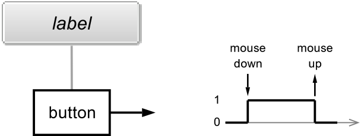

Introduction
What is Faust?
Faust (Functional Audio Stream) is a functional programming language for sound synthesis and audio processing with a strong focus on the design of synthesizers, musical instruments, audio effects, etc. Faust targets high-performance signal processing applications and audio plug-ins for a variety of platforms and standards. It is used on stage for concerts and artistic productions, in education and research, in open source projects as well as in commercial applications.
The core component of Faust is its compiler. It allows to “translate” any Faust digital signal processing (DSP) specification to a wide range of non-domain specific languages such as C++, C, JAVA, JavaScript, LLVM bit code, WebAssembly, etc. In this regard, Faust can be seen as an alternative to C++ but is much simpler and intuitive to learn.
Thanks to a wrapping system called “architectures,” codes generated by Faust can be easily compiled into a wide variety of objects ranging from audio plug-ins to standalone applications or smartphone and web apps, etc. (check the Quick Tour of the Faust Targets section for an exhaustive list.
This manual gives an overview of the Faust programming language and of its features through various interactive examples.
What is Faust Good For?
Faust’s syntax allows to express any DSP algorithm as a block diagram. For example, + is considered as a valid function (and block) taking two arguments (signals) and returning one:

Blocks can be easily connected together using the : “connection” composition:

In that case, we add two signals together and then scale the result of this operation.
Thus, Faust is perfect to implement time-domain algorithms that can be easily represented as block diagrams such as filters, waveguide physical models, virtual analog elements, etc.
Faust is very concise, for example, here’s the implementation of a one pole filter/integrator equivalent to \(y(n) = x(x) + a_{1}y(n-1)\) (where \(a_{1}\) is the pole):

Codes generated by Faust are extremely optimized and usually more efficient that handwritten codes (at least for C and C++). The Faust compiler tries to optimize each element of an algorithm. For example, you shouldn’t have to worry about using divides instead of multiplies as they get automatically replaced by multiplies by the compiler when possible, etc.
Faust is very generic and allows to write code that will run on dozens of platforms.
What is Faust Not (So) Good For?
Despite all this, Faust does have some limitations. For instance, it doesn’t allow for the efficient implementation of algorithms requiring multi-rates such as the FFT, convolution, etc. While there are tricks to go around this issue, we’re fully aware that it is a big one and we’re working as hard as possible on it.
Faust’s conciseness can sometimes become a problem too, especially for complex algorithms with lots of recursive signals. It is usually crucial in Faust to have the “mental global picture” of the algorithm to be implemented which in some cases can be hard.
While the Faust compiler is relatively bug-free, it does have some limitations and might get stuck in some extreme cases that you will probably never encounter. If you do, shoot us an e-mail!
From here, you can jump to … if you wanna get your hands dirty, etc. TODO.
Design Principles
Since the beginning of its development in 2002, Faust has been guided by various design principles:
- Faust is a specification language. It aims at providing an adequate notation to describe signal processors from a mathematical point of view. Faust is, as much as possible, free from implementation details.
- Faust programs are fully compiled (i.e., not interpreted). The compiler translates Faust programs into equivalent programs in other languages (e.g., JAVA, JavaScript, LLVM bit code, WebAssembly, etc.) taking care of generating the most efficient code. The result can generally compete with, and sometimes even outperform, C++ code written by seasoned programmers.
- The generated code works at the sample level. It is therefore suited to implement low-level DSP functions like recursive filters. Moreover the code can be easily embedded. It is self-contained and doesn’t depend of any DSP library or runtime system. It has a very deterministic behavior and a constant memory footprint.
- The semantic of Faust is simple and well defined. This is not just of academic interest. It allows the Faust compiler to be semantically driven. Instead of compiling a program literally, it compiles the mathematical function it denotes. This feature is useful for example to promote components reuse while preserving optimal performance.
- Faust is a textual language but nevertheless block-diagram oriented. It actually combines two approaches: functional programming and algebraic block-diagrams. The key idea is to view block-diagram construction as function composition. For that purpose, Faust relies on a block-diagram algebra of five composition operations:
: , ~ <: :>(see the section on Diagram Composition Operations for more details). - Thanks to the concept of architecture, Faust programs can be easily deployed on a large variety of audio platforms and plugin formats without any change to the Faust code.
Signal Processor Semantic
A Faust program describes a signal processor. The role of a signal processor is to transforms a (possibly empty) group of input signals in order to produce a (possibly empty) group of output signals. Most audio equipments can be modeled as signal processors. They have audio inputs, audio outputs as well as control signals interfaced with sliders, knobs, vu-meters, etc.
More precisely :
- A signal \(s\) is a discrete function of time \(s:\mathbb{Z}\rightarrow\mathbb{R}\). The value of a signal \(s\) at time \(t\) is written \(s(t)\). The values of signals are usually needed starting from time \(0\). But to take into account delay operations, negative times are possible and are always mapped to zeros. Therefore for any Faust signal \(s\) we have \(\forall t<0, s(t)=0\). In operational terms this corresponds to assuming that all delay lines are signals initialized with \(0\)s.
- Faust considers two type of signals: integer signals (\(s:\mathbb{Z}\rightarrow\mathbb{Z}\)) and floating point signals (\(s:\mathbb{Z}\rightarrow\mathbb{Q}\)). Exchanges with the outside world are, by convention, made using floating point signals. The full range is represented by sample values between \(-1.0\) and \(+1.0\).
- The set of all possible signals is \(\mathbb{S}=\mathbb{Z}\rightarrow\mathbb{R}\).
- A group of \(n\) signals (a n-tuple of signals) is written \((s_{1},\ldots,s_{n})\in \mathbb{S}^{n}\). The empty tuple, single element of \(\mathbb{S}^{0}\) is notated \(()\).
- A signal processors \(p\), is a function from n-tuples of signals to m-tuples of signals \(p:\mathbb{S}^{n}\rightarrow\mathbb{S}^{m}\). The set \(\mathbb{P}=\bigcup_{n,m}\mathbb{S}^{n}\rightarrow\mathbb{S}^{m}\) is the set of all possible signal processors.
As an example, let’s express the semantic of the Faust primitive +. Like any Faust expression, it is a signal processor. Its signature is \(\mathbb{S}^{2}\rightarrow\mathbb{S}\). It takes two input signals \(X_0\) and \(X_1\) and produces an output signal \(Y\) such that \(Y(t) = X_0(t)+X_1(t)\).
Numbers are signal processors too. For example the number \(3\) has signature \(\mathbb{S}^{0}\rightarrow\mathbb{S}\). It takes no input signals and produce an output signal \(Y\) such that \(Y(t) = 3\).
Quick Start
TODO Will be all based on the online editor… May be could be a simple copy and paste of the session 1 of the Kadenze course…
Overview of the Faust Universe
While in its most primitive form, Faust is distributed as a command-line compiler, a wide range of tools have been developed around it in the course of the past few years. Their variety and their function might be hard to grab at first. This sort chapter provides an overview of their role and will hopefully help you decide which one is better suited for your personal use.
TODO: here say a few words about the philosophy behind the disto: the online editor is the way to go for most users, then various pre-compiled packages of the compiler can be found, then source, then git. Finally other external tools for development.
The Faust Distribution
The Faust distribution hosts the source of the Faust compiler (both in its command line and library version), the source of the Faust architectures (targets), the various Faust compilation scripts, a wide range of Faust-related-tools, the Faust DSP Libraries (which in practice are hosted a separate Git submodule), etc.
The latest stable release of the Faust distribution can be found here: https://github.com/grame-cncm/faust/releases. It is recommended for most Faust users willing to compile the Faust compiler and libfaust from scratch.
To have the latest stable development version, you can use the master branch of the Faust git repository which is hosted on GitHub: https://github.com/grame-cncm/faust/tree/master.
For something even more bleeding edge (to be used at your own risks), you might use the master-dev branch of the Faust git repository: https://github.com/grame-cncm/faust/tree/master-dev. master-dev is the development sub-branch of master. It is used by Faust developers to commit their changes and can be considered as “the main development branch.” The goal is to make sure that master is always functional. Merges between master-dev and master are carried out multiple times a week by the GRAME team.
Also, note that pre-compiled packages of the Faust compiler and of
libfaustfor various platforms can be found on the Download Page of the Faust website.
The Faust distribution is organized as follows:
architecture/ : the source of the architecture files
benchmark/ : tools to measure the efficiency of the generated code
build/ : the various makefiles and build folders
compiler/ : sources of the Faust compiler
COPYING : license information
debian/ : files for Debian installation
Dockerfile : docker file
documentation/ : Faust's documentations
examples/ : Faust programs examples organized by categories
installer/ : various installers for Linux distribution
libraries/ : Faust DSP libraries
Makefile : makefile used to build and install Faust
README.md : instructions on how to build and install Faust
syntax-highlighting/ : support for syntax highlighting for several editors
tests/ : various tests
tools/ : tools to produce audio applications and plugins
windows/ : Windows related ressourcesThe following subsections present some of the main components of the Faust distribution.
Command-Line Compiler
- Link to precompiled version versions (download page)
- What is the Faust compiler? (Quickly)
- Link to Using the Faust Compiler
libfaust
- Link to precompiled version versions (download page)
- What is it? (Quickly)
- Link to tutorial Embedding the Faust Compiler Using
libfaust
faust2... Scripts
Web Tools
The Online Editor
The FaustPlayground
The Faust Online Compiler
Web Services
Development Tools
FaustLive
FaustWorks
Compiling and Installing Faust
This chapter describes how to get and compile the Faust compiler as well as other tools related to Faust (e.g., libfaust, libosc, libhttpd, etc.).
Getting the Source Code
An overview of the various places where the Faust source can be downloaded is given here.
If you downloaded the latest Faust release, just un-compressed the archive file and open it in a terminal. For instance, something like (this might vary depending on the version of Faust you downloaded):
tar xzf faust-2.5.31.tar.gz
cd faust-2.5.31If you wish to get the Faust source directly from the git repository, just run:
git clone --recursive https://github.com/grame-cncm/faust.git
cd faustin a terminal. Note that the --recursive option is necessary here since some elements (e.g., the Faust DSP libraries) are placed in other repositories.
Finally, if you wish to use the development (and potentially unstable) branch, just run:
git checkout master-devafter the previous 2 commands.
TODO: see with Dominique for whatever comes next here…
Since release 2.5.18, Faust compilation and installation is based on cmake.
Faust Syntax
Faust Program
A Faust program is essentially a list of statements. These statements can be metadata declarations, imports, definitions, and documentation tags, with optional C++ style (//... and /*...*/) comments.
Here is a short Faust program that implements of a simple noise generator (called from the noises.lib Faust library). It exhibits various kind of statements : two metadata declarations, an imports, a comment, and a definition. We will study later how documentation statements work:

declare name "Noise";
declare copyright "(c)GRAME 2018";
import("stdfaust.lib");
// noise level controlled by a slider
process = no.noise * hslider("gain",0,0,1, 0.1);The keyword process is the equivalent of main in C/C++. Any Faust program, to be valid, must at least define process.
Statements
The statements of a Faust program are of four kinds:
- metadata declarations,
- file imports,
- definitions,
- documentation.
All statements but documentation end with a semicolon ;.
Metadata Declarations
All metadata declaration in Faust start with declare.
When used in the context of Faust program (e.g., .dsp file), they are followed by a key and a string. For example:
declare name "Noise";allows us to specify the name of a Faust program in its whole.
When used in the context of a library (e.g., .lib file), metadata declarations can either be “global” (as in the previous example), or associated to a specific function. In that case, declare will be followed by the name of the function, a key, and a string. For example:
declare add author "John Doe"
add = +;This is very useful when a library has several contributors and that functions potentially have different license terms.
Unlike regular comments, metadata declarations will appear in the C++ code generated by the Faust compiler. A good practice is to start a Faust program with some standard declarations:
declare name "MyProgram";
declare author "MySelf";
declare copyright "MyCompany";
declare version "1.00";
declare license "BSD"; Imports
File imports allow us to import definitions from other source files.
For example import("maths.lib"); imports the definitions of the maths.lib library.
The most common file to be imported is the stdfaust.lib library which gives access to all the standard Faust libraries from a single point:

Documentation Tags
Documentation statements are optional and typically used to control the generation of the mathematical documentation of a Faust program. This documentation system is detailed in the Mathematical Documentation chapter. In this section we essentially describe the documentation statements syntax.
A documentation statement starts with an opening <mdoc> tag and ends with a closing </mdoc> tag. Free text content, typically in Latex format, can be placed in between these two tags.

Moreover, optional sub-tags can be inserted in the text content itself to require the generation, at the insertion point, of mathematical equations, graphical block-diagrams, Faust source code listing and explanation notice.

The generation of the mathematical equations of a Faust expression can be requested by placing this expression between an opening <equation> and a closing </equation> tag. The expression is evaluated within the lexical context of the Faust program.

Similarly, the generation of the graphical block-diagram of a Faust expression can be requested by placing this expression between an opening <diagram> and a closing </diagram> tag. The expression is evaluated within the lexical context of the Faust program.

The <metadata> tags allow to reference Faust metadata declarations, calling the corresponding keyword.

The <notice/> empty-element tag is used to generate the conventions used in the mathematical equations.

The <listing/> empty-element tag is used to generate the listing of the Faust program. Its three attributes mdoctags, dependencies, and distributed enable or disable respectively <mdoc> tags, other files dependencies and distribution of interleaved Faust code between <mdoc> sections.
Definitions
A definition associates an identifier with an expression. Definitions are essentially a convenient shortcut avoiding to type long expressions. During compilation, more precisely during the evaluation stage, identifiers are replaced by their definitions. It is therefore always equivalent to use an identifier or directly its definition. Please note that multiple definitions of a same identifier are not allowed, unless it is a pattern matching based definition.
Simple Definitions
The syntax of a simple definition is:
identifier = expression ;For example here is the definition of random, a simple pseudo-random number generator:
random = +(12345) ~ *(1103515245);Function Definitions
Definitions with formal parameters correspond to functions definitions.
For example the definition of linear2db, a function that converts linear values to decibels, is:
linear2db(x) = 20*log10(x);Please note that this notation is only a convenient alternative to the direct use of lambda-abstractions (also called anonymous functions). The following is an equivalent definition of linear2db using a lambda-abstraction:
linear2db = \(x).(20*log10(x));Definitions with pattern matching
Moreover, formal parameters can also be full expressions representing patterns.
This powerful mechanism allows to algorithmically create and manipulate block diagrams expressions. Let’s say that you want to describe a function to duplicate an expression several times in parallel:
duplicate(1,x) = x;
duplicate(n,x) = x, duplicate(n-1,x);Note that this last definition is a convenient alternative to the more verbose:
duplicate = case {
(1,x) => x;
(n,x) => duplicate(n-1,x);
};A use case for duplicate could be to put 5 white noise generators in parallel:

import("stdfaust.lib");
duplicate(1,x) = x;
duplicate(n,x) = x, duplicate(n-1,x);
process = duplicate(5,no.noise);Here is another example to count the number of elements of a list. Please note that we simulate lists using parallel composition: (1,2,3,5,7,11). The main limitation of this approach is that there is no empty list. Moreover lists of only one element are represented by this element:
count((x,xs)) = 1+count(xs);
count(x) = 1;If we now write count(duplicate(10,666)), the expression will be evaluated as 10.
Note that the order of pattern matching rules matters. The more specific rules must precede the more general rules. When this order is not respected, as in:
count(x) = 1;
count((x,xs)) = 1+count(xs);the first rule will always match and the second rule will never be called.
Expressions
Despite its textual syntax, Faust is conceptually a block-diagram language. Faust expressions represent DSP block-diagrams and are assembled from primitive ones using various composition operations. More traditional numerical expressions in infix notation are also possible. Additionally Faust provides time based expressions, like delays, expressions related to lexical environments, expressions to interface with foreign function and lambda expressions.

Diagram Expressions
Diagram expressions are assembled from primitive ones using either binary composition operations or high level iterative constructions.

Diagram Composition Operations
Five binary composition operations are available to combine block-diagrams:
- recursion (
~), - parallel (
,), - sequential (
:), - split (
<:), - merge (
:>).
One can think of each of these composition operations as a particular way to connect two block diagrams.

To describe precisely how these connections are done, we have to introduce some notation. The number of inputs and outputs of a block-diagram \(A\) are expressed as \(\mathrm{inputs}(A)\) and \(\mathrm{outputs}(A)\). The inputs and outputs themselves are respectively expressed as: \([0]A\), \([1]A\), \([2]A\), \(\ldots\) and \(A[0]\), \(A[1]\), \(A[2]\), etc.
For each composition operation between two block-diagrams \(A\) and \(B\) we will describe the connections \(A[i]\rightarrow [j]B\) that are created and the constraints on their relative numbers of inputs and outputs.
The priority and associativity of this five operations are:
| Syntax | Priority | Association | Description |
|---|---|---|---|
expression ~ expression |
4 | left | Recursive Composition |
expression , expression |
3 | right | Parallel Composition |
expression : expression |
2 | right | Sequential Composition |
expression <: expression |
1 | right | Split Composition |
expression :> expression |
1 | right | Merge Composition |
Parallel Composition
The parallel composition (e.g., (A,B)) is probably the simplest one. It places the two block-diagrams one on top of the other, without connections. The inputs of the resulting block-diagram are the inputs of A and B. The outputs of the resulting block-diagram are the outputs of A and B.
Parallel composition is an associative operation: (A,(B,C)) and ((A,B),C) are equivalents. When no parenthesis are used (e.g., A,B,C,D), Faust uses right associativity and therefore builds internally the expression (A,(B,(C,D))). This organization is important to know when using pattern matching techniques on parallel compositions.
Example: Oscillators in Parallel
Parallel composition can be used to put 3 oscillators of different kinds and frequencies in parallel, which will result in a Faust program with 3 outputs:

Example: Stereo Effect
Parallel composition can be used to easily turn a mono effect into a stereo one which will result in a Faust program with 2 inputs and 2 outputs:

Note that there’s a better to write this last example using the par iteration:

Sequential Composition
The sequential composition (e.g., A:B) expects:
\[\mathrm{outputs}(A)=\mathrm{inputs}(B)\]
It connects each output of \(A\) to the corresponding input of \(B\):
\[A[i]\rightarrow[i]B\]
Sequential composition is an associative operation: (A:(B:C)) and ((A:B):C) are equivalents. When no parenthesis are used, like in A:B:C:D, Faust uses right associativity and therefore builds internally the expression (A:(B:(C:D))).
Example: Sine Oscillator
Since everything is considered as a signal generator in Faust, sequential composition can be simply used to pass an argument to a function:

Example: Effect Chain
Sequential composition can be used to create an audio effect chain. Here we’re plugging a guitar distortion to an autowah:

import("stdfaust.lib");
drive = 0.6;
offset = 0;
autoWahLevel = 1;
process = ef.cubicnl(drive,offset) : ve.autowah(autoWahLevel);Split Composition
The split composition (e.g., A<:B) operator is used to distribute the outputs of \(A\) to the inputs of \(B\).
For the operation to be valid, the number of inputs of \(B\) must be a multiple of the number of outputs of \(A\):
\[\mathrm{outputs}(A).k=\mathrm{inputs}(B)\]
Each input \(i\) of \(B\) is connected to the output \(i \bmod k\) of \(A\):
\[A[i \bmod k]\rightarrow[i]B\]
Example: Duplicating the Output of an Oscillator
Split composition can be used to duplicate signals. For example, the output of the following sawtooth oscillator is duplicated 3 times in parallel.

Note that this can be written in a more effective way by replacing _,_,_ with par(i,3,_) using the par iteration.
Example: Connecting a Mono Effect to a Stereo One
More generally, the split composition can be used to connect a block with a certain number of output to a block with a greater number of inputs:

import("stdfaust.lib");
drive = 0.6;
offset = 0;
process = ef.cubicnl(drive,offset) <: dm.zita_light;Note that an arbitrary number of signals can be split, for example:

import("stdfaust.lib");
drive = 0.6;
offset = 0;
process = par(i,2,ef.cubicnl(drive,offset)) <: par(i,2,dm.zita_light);Once again, the only rule with this is that in the expression A<:B the number of inputs of B has to be a multiple of the number of outputs of A.
Merge Composition
The merge composition (e.g., A:>B) is the dual of the split composition. The number of outputs of \(A\) must be a multiple of the number of inputs of \(B\):
\[\mathrm{outputs}(A)=k.\mathrm{inputs}(B)\]
Each output \(i\) of \(A\) is connected to the input \(i \bmod k\) of \(B\) :
\[A[i]\rightarrow\ [i \bmod k]B\]
The \(k\) incoming signals of an input of \(B\) are summed together.
Example: Summing Signals Together - Additive Synthesis
Merge composition can be used to sum an arbitrary number of signals together. Here’s an example of a simple additive synthesizer (note that the result of the sum of the signals is divided by 3 to prevent clicking):

import("stdfaust.lib");
freq = hslider("freq",440,50,3000,0.01);
gain = hslider("gain",1,0,1,0.01);
gate = button("gate");
envelope = gain*gate : si.smoo;
process = os.osc(freq),os.osc(freq*2),os.osc(freq*3) :> /(3)*envelope;While the resulting block diagram will look slightly different, this is mathematically equivalent to:

import("stdfaust.lib");
freq = hslider("freq",440,50,3000,0.01);
gain = hslider("gain",1,0,1,0.01);
gate = button("gate");
envelope = gain*gate : si.smoo;
process = (os.osc(freq) + os.osc(freq*2) + os.osc(freq*3))/(3)*envelope;Example: Connecting a Stereo Effect to a Mono One
More generally, the merge composition can be used to connect a block with a certain number of output to a block with a smaller number of inputs:

import("stdfaust.lib");
drive = 0.6;
offset = 0;
process = dm.zita_light :> ef.cubicnl(drive,offset);Note that an arbitrary number of signals can be split, for example:

import("stdfaust.lib");
drive = 0.6;
offset = 0;
process = par(i,2,dm.zita_light) :> par(i,2,ef.cubicnl(drive,offset));Once again, the only rule with this is that in the expression A:>B the number of outputs of A has to be a multiple of the number of inputs of B.
Recursive Composition
The recursive composition (e.g., A~B) is used to create cycles in the block-diagram in order to express recursive computations. It is the most complex operation in terms of connections.
To be applicable, it requires that:
\[\mathrm{outputs}(A) \geq \mathrm{inputs}(B) and \mathrm{inputs}(A) \geq \mathrm{outputs}(B)\]
Each input of \(B\) is connected to the corresponding output of \(A\) via an implicit 1-sample delay :
\[A[i]\stackrel{Z^{-1}}{\rightarrow}[i]B\]
and each output of \(B\) is connected to the corresponding input of \(A\):
\[B[i]\rightarrow [i]A\]
The inputs of the resulting block diagram are the remaining unconnected inputs of \(A\). The outputs are all the outputs of \(A\).
Example: Timer
Recursive composition can be used to implement a “timer” that will count each sample starting at time \(n=0\):

The difference equation corresponding to this program is:
\[y(n) = y(n-1) + 1\]
an its output signal will look like: \((1,2,3,4,5,6,\dots)\).
Example: One Pole Filter
Recursive composition can be used to implement a one pole filter with one line of code and just a few characters:

The difference equation corresponding to this program is:
\[y(n) = x(n) + a_{1}y(n-1)\]
Note that the one sample delay of the filter is implicit here so it doesn’t have to be declared.
Inputs and Outputs of an Expression
The number of inputs and outputs of a Faust expression can be known at compile time simply by using inputs(expression) and outputs(expression).
For example, the number of outputs of a sine wave oscillator can be known simply by writing the following program:

Note that Faust automatically simplified the expression by generating a program that just outputs 1.
This type of construction is useful to define high order functions and build algorithmically complex block-diagrams. Here is an example to automatically reverse the order of the outputs of an expression.
Xo(expr) = expr <: par(i,n,ba.selector(n-i-1,n))
with {
n = outputs(expr);
};And the inputs of an expression :
Xi(expr) = si.bus(n) <: par(i,n,ba.selector(n-i-1,n)) : expr
with {
n = inputs(expr);
};For example Xi(-) will reverse the order of the two inputs of the substraction:

import("stdfaust.lib");
Xi(expr) = si.bus(n) <: par(i,n,ba.selector(n-i-1,n)) : expr
with {
n = inputs(expr);
};
toto = os.osc(440),os.sawtooth(440), os.triangle(440);
process = Xi(-);Iterations
Iterations are analogous to for(...) loops in other languages and provide a convenient way to automate some complex block-diagram constructions.

The use and role of par, seq, sum, and prod are detailed in the following sections.
par Iteration
The par iteration can be used to duplicate an expression in parallel. Just like other types of iterations in Faust:
- its first argument is a variable name containing the number of the current iteration (a bit like the variable that is usually named
iin a for loop) starting at 0, - its second argument is the number of iterations,
- its third argument is the expression to be duplicated.
Example: Simple Additive Synthesizer

import("stdfaust.lib");
freq = hslider("freq",440,50,3000,0.01);
gain = hslider("gain",1,0,1,0.01);
gate = button("gate");
envelope = gain*gate : si.smoo;
nHarmonics = 4;
process = par(i,nHarmonics,os.osc(freq*(i+1))) :> /(nHarmonics)*envelope;i is used here at each iteration to compute the value of the frequency of the current oscillator. Also, note that this example could be re-wrtitten using sum iteration (see example in the corresponding section).
seq Iteration
The seq iteration can be used to duplicate an expression in series. Just like other types of iterations in Faust:
- its first argument is a variable name containing the number of the current iteration (a bit like the variable that is usually named
iin a for loop) starting at 0, - its second argument is the number of iterations,
- its third argument is the expression to be duplicated.
Example: Peak Equalizer
The fi.peak_eq function of the Faust libraries implements a second order “peak equalizer” section (gain boost or cut near some frequency). When placed in series, it can be used to implement a full peak equalizer:

import("stdfaust.lib");
nBands = 8;
filterBank(N) = hgroup("Filter Bank",seq(i,N,oneBand(i)))
with{
oneBand(j) = vgroup("[%j]Band %a",fi.peak_eq(l,f,b))
with{
a = j+1; // just so that band numbers don't start at 0
l = vslider("[2]Level[unit:db]",0,-70,12,0.01) : si.smoo;
f = nentry("[1]Freq",(80+(1000*8/N*(j+1)-80)),20,20000,0.01) : si.smoo;
b = f/hslider("[0]Q[style:knob]",1,1,50,0.01) : si.smoo;
};
};
process = filterBank(nBands);Note that i is used here at each iteration to compute various elements and to format some labels. Having user interface elements with different names is a way to force their differentiation in the generated interface.
sum Iteration
The sum iteration can be used to duplicate an expression as a sum. Just like other types of iterations in Faust:
- its first argument is a variable name containing the number of the current iteration (a bit like the variable that is usually named
iin a for loop) starting at 0, - its second argument is the number of iterations,
- its third argument is the expression to be duplicated.
Example: Simple Additive Synthesizer
The following example is just a slightly different version from the one presented in the par iteration section. While their block diagrams look slightly different, the generated code is exactly the same.

import("stdfaust.lib");
freq = hslider("freq",440,50,3000,0.01);
gain = hslider("gain",1,0,1,0.01);
gate = button("gate");
envelope = gain*gate : si.smoo;
nHarmonics = 4;
process = sum(i,nHarmonics,os.osc(freq*(i+1)))/(nHarmonics)*envelope;i is used here at each iteration to compute the value of the frequency of the current oscillator.
prod Iteration
The sum iteration can be used to duplicate an expression as a product. Just like other types of iterations in Faust:
- its first argument is a variable name containing the number of the current iteration (a bit like the variable that is usually named
iin a for loop) starting at 0, - its second argument is the number of iterations,
- its third argument is the expression to be duplicated.
Example: Amplitude Modulation Synthesizer
The following example implements an amplitude modulation synthesizer using an arbitrary number of oscillators thanks to the prod iteration:

import("stdfaust.lib");
freq = hslider("[0]freq",440,50,3000,0.01);
gain = hslider("[1]gain",1,0,1,0.01);
shift = hslider("[2]shift",0,0,1,0.01);
gate = button("[3]gate");
envelope = gain*gate : si.smoo;
nOscs = 4;
process = prod(i,nOscs,os.osc(freq*(i+1+shift)))*envelope;i is used here at each iteration to compute the value of the frequency of the current oscillator. Note that the shift parameter can be used to tune the frequency drift between each oscillator.
Infix Notation and Other Syntax Extensions
Infix notation is commonly used in mathematics. It consists in placing the operand between the arguments as in \(2+3\)
Besides its algebra-based core syntax, Faust provides some syntax extensions, in particular the familiar infix notation. For example if you want to multiply two numbers, say 2 and 3, you can write directly 2*3 instead of the equivalent core-syntax expression 2,3 : *.
The infix notation is not limited to numbers or numerical expressions. Arbitrary expressions A and B can be used, provided that A,B has exactly two outputs. For example _/2 is equivalent to _,2:/ which divides the incoming signal by 2.
Here are a few examples of equivalences:
| Infix Syntax | Core Syntax | |
|---|---|---|
2-3 |
\(\equiv\) | 2,3 : - |
2*3 |
\(\equiv\) | 2,3 : * |
_@7 |
\(\equiv\) | _,7 : @ |
_/2 |
\(\equiv\) | _,2 : / |
A<B |
\(\equiv\) | A,B : < |
In case of doubts on the meaning of an infix expression, for example _*_, it is useful to translate it to its core syntax equivalent, here _,_:*, which is equivalent to *.
Infix Operators
Built-in primitives that can be used in infix notation are called infix operators and are listed below. Please note that a more detailed description of these operators is available section on primitives.
Prefix Notation
Beside infix notation, it is also possible to use prefix notation. The prefix notation is the usual mathematical notation for functions \(f(x,y,z,\ldots)\), but extended to infix operators.
It consists in first having the operator, for example /, followed by its arguments between parentheses: /(2,3):
| Prefix Syntax | Core Syntax | |
|---|---|---|
*(2,3) |
\(\equiv\) | 2,3 : * |
@(_,7) |
\(\equiv\) | _,7 : @ |
/(_,2) |
\(\equiv\) | _,2 : / |
<(A,B) |
\(\equiv\) | A,B : < |
Partial Application
The partial application notation is a variant of the prefix notation in which not all arguments are given. For instance /(2) (divide by 2), ^(3) (rise to the cube), and @(512) (delay by 512 samples) are examples of partial applications where only one argument is given. The result of a partial application is a function that “waits” for the remaining arguments.
When doing partial application with an infix operator, it is important to note that the supplied argument is not the first argument, but always the second one:
| Prefix Partial Application Syntax | Core Syntax | |
|---|---|---|
+(C) |
\(\equiv\) | _,C : * |
-(C) |
\(\equiv\) | _,C : - |
<(C) |
\(\equiv\) | _,C : < |
/(C) |
\(\equiv\) | _,C : / |
For commutative operations that doesn’t matter. But for non-commutative ones, it is more “natural” to fix the second argument. We use divide by 2 (/(2)) or rise to the cube (^(3)) more often than the other way around.
Please note that this rule only applies to infix operators, not to other primitives or functions. If you partially apply a regular function to a single argument, it will correspond to the first parameter.
Example: Gain Controller
The following example demonstrates the use of partial application in the context of a gain controller:

' Time Expression
' is used to express a one sample delay. For example:

will delay the incoming signal by one sample.
' time expressions can be chained, so the output signal of this program:

will look like: \((0,0,1,1,1,1,\dots)\).
The ' time expression is useful when designing filters, etc. and is equivalent to @(1) (see the @ Time Expression).
@ Time Expression
@ is used to express a delay with an arbitrary number of samples. For example:

will delay the incoming signal by 10 samples.
A delay expressed with @ doesn’t have to be fixed but it must be positive and bounded. Therefore, the values of a slider are perfectly acceptable:

@ only allows for the implementation of integer delay. Thus, various fractional delay algorithms are implemented in the Faust libraries.
Environment Expressions
Faust is a lexically scoped language. The meaning of a Faust expression is determined by its context of definition (its lexical environment) and not by its context of use.
To keep their original meaning, Faust expressions are bounded to their lexical environment in structures called closures. The following constructions allow to explicitly create and access such environments. Moreover they provide powerful means to reuse existing code and promote modular design.
with Expression
The with construction allows to specify a local environment: a private list of definition that will be used to evaluate the left hand expression.
In the following example :

pink = f : + ~ g
with {
f(x) = 0.04957526213389*x - 0.06305581334498*x' + 0.01483220320740*x'';
g(x) = 1.80116083982126*x - 0.80257737639225*x';
};
process = pink;the definitions of f(x) and g(x) are local to f : + ~ g.
Please note that with is left associative and has the lowest priority:
f : + ~ g with {...}is equivalent to(f : + ~ g) with {...}.f : + ~ g with {...} with {...}is equivalent to((f : + ~ g) with {...}) with {...}.
letrec Expression
The letrec construction is somehow similar to with, but for difference equations instead of regular definitions. It allows us to easily express groups of mutually recursive signals, for example:
\[ x(t) = y(t-1) + 10\\ y(t) = x(t-1) - 1 \]
as E letrec { 'x = y+10; 'y = x-1; }
The syntax is defined by the following rules:
Note the special notation 'x = y + 10 instead of x = y' + 10. It makes syntactically impossible to write non-sensical equations like x=x+1.
Here is a more involved example. Let say we want to define an envelope generator with an attack and a release time (as a number of samples), and a gate signal. A possible definition could be:

import("stdfaust.lib");
ar(a,r,g) = v
letrec {
'n = (n+1) * (g<=g');
'v = max(0, v + (n<a)/a - (n>=a)/r) * (g<=g');
};
gate = button("gate");
process = os.osc(440)*ar(1000,1000,gate);With the following semantics for \(n(t)\) and \(v(t)\):
\[ n(t) = (n(t-1)+1) * (g(t) <= g(t-1))\\ v(t) = max(0, v(t-1) + (n(t-1)<a(t))/a(t) - (n(t-1)>=a(t))/r(t)) * (g(t)<=g(t-1)) \]
environment Expression
The environment construction allows to create an explicit environment. It is like a `with’, but without the left hand expression. It is a convenient way to group together related definitions, to isolate groups of definitions and to create a name space hierarchy.
In the following example an environment construction is used to group together some constant definitions :
constant = environment {
pi = 3.14159;
e = 2,718;
...
};The . construction allows to access the definitions of an environment (see next section).
Access Expression
Definitions inside an environment can be accessed using the . construction.
For example constant.pi refers to the definition of pi in the constant environment defined above.
Note that environments don’t have to be named. We could have written directly:
environment{pi = 3.14159; e = 2,718;....}.pilibrary Expression
The library construct allows to create an environment by reading the definitions from a file.
For example library("filters.lib") represents the environment obtained by reading the file filters.lib. It works like import("miscfilter.lib") but all the read definitions are stored in a new separate lexical environment. Individual definitions can be accessed as described in the previous paragraph. For example library("filters.lib").lowpass denotes the function lowpass as defined in the file miscfilter.lib.
To avoid name conflicts when importing libraries it is recommended to prefer library to import. So instead of :
import("filters.lib");
...
...lowpass....
...
};the following will ensure an absence of conflicts :
fl = library("filters.lib");
...
...fl.lowpass....
...
};In practice, that’s how the stdfaust.lib library works.
component Expression
The component construction allows us to reuse a full Faust program (e.g., a .dsp file) as a simple expression.
For example component("freeverb.dsp") denotes the signal processor defined in file freeverb.dsp.
Components can be used within expressions like in:
...component("karplus32.dsp") : component("freeverb.dsp")... Please note that component("freeverb.dsp") is equivalent to library("freeverb.dsp").process.
component works well in tandem with explicit substitution (see next section).
Explicit Substitution
Explicit substitution can be used to customize a component or any expression with a lexical environment by replacing some of its internal definitions, without having to modify it.
For example we can create a customized version of component("freeverb.dsp"), with a different definition of foo(x), by writing:
...component("freeverb.dsp")[foo(x) = ...;]...
};Foreign Expressions
Reference to external C functions, variables and constants can be introduced using the foreign function mechanism.
ffunction
An external C function is declared by indicating its name and signature as well as the required include file. The file maths.lib of the Faust distribution contains several foreign function definitions, for example the inverse hyperbolic sine function asinh:
asinh = ffunction(float asinh (float), <math.h>, "");Foreign functions with input parameters are considered pure math functions. They are therefore considered free of side effects and called only when their parameters change (that is at the rate of the fastest parameter).
Exceptions are functions with no input parameters. A typical example is the C rand() function. In this case, the compiler generates code to call the function at sample rate.
Signature
The signature part (float asinh (float) in the example presented in the previous section) describes the prototype of the C function: return type, function name, and list of parameter types. Because the name of the foreign function can possibly depend on the floating point precision in use (float, double and quad), it is possible to give a different function name for each floating point precision using a signature with up to three function names.
For example in the declaration:
asinh = ffunction(float asinhf|asinh|asinhl (float), <math.h>, "");the signature float asinhf|asinh|asinhl (float) indicates to use the function name asinhf in single precision, asinh in double precision and asinhl in long double (quad) precision.
Types
Only numerical functions involving simple int and float parameters are allowed currently in Faust. No vectors, tables or data structures can be passed as parameters or returned.
Variables and Constants
External variables and constants can also be declared with a similar syntax. In the same maths.lib file, the definition of the sampling rate constant SR and the definition of the block-size variable BS can be found:
SR = min(192000.0,max(1.0,fconstant(int fSamplingFreq, <math.h>)));
BS = fvariable(int count, <math.h>);Foreign constants are not supposed to vary. Therefore expressions involving only foreign constants are only computed once, during the initialization period.
Variable are considered to vary at block speed. This means that expressions depending of external variables are computed every block.
File Include
In declaring foreign functions one has also to specify the include file. It allows the Faust compiler to add the corresponding #include in the generated code.
Library File
In declaring foreign functions one can possibly specify the library where the actual code is located. It allows the Faust compiler to (possibly) automatically link the library. Note that this feature is only used with the LLVM backend in ‘libfaust’ dynamic library model.
Applications and Abstractions
Abstractions and applications are fundamental programming constructions directly inspired by Lambda-Calculus. These constructions provide powerful ways to describe and transform block-diagrams algorithmically.
Abstractions
Abstractions correspond to functions definitions and allow to generalize a block-diagram by making variable some of its parts.
Let’s say we want to transform a stereo reverb, dm.zita_light for instance, into a mono effect. The following expression can be written (see the sections on Split Composition and Merge Composition):
_ <: dm.zita_light :> _ The incoming mono signal is split to feed the two input channels of the reverb, while the two output channels of the reverb are mixed together to produce the resulting mono output.
Imagine now that we are interested in transforming other stereo effects. We could generalize this principle by making zita_light a variable:
\(zita_light).(_ <: zita_light :> _)The resulting abstraction can then be applied to transform other effects. Note that if zita_light is a perfectly valid variable name, a more neutral name would probably be easier to read like:
\(fx).(_ <: fx :> _)A name can be given to the abstraction and in turn use it on dm.zita_light:

Or even use a more traditional, but equivalent, notation:
mono(fx) = _ <: fx :> _;Applications
Applications correspond to function calls and allow to replace the variable parts of an abstraction with the specified arguments.
For example, the abstraction described in the previous section can be used to transform a stereo reverb:
mono(dm.zita_light)The compiler will start by replacing mono by its definition:
\(fx).(_ <: fx :> _)(dm.zita_light)Replacing the variable part with the argument is called beta-reduction in Lambda-Calculus
Whenever the Faust compiler find an application of an abstraction it replaces the variable part with the argument. The resulting expression is as expected:
(_ <: dm.zita_light :> _)Pattern Matching
Pattern matching rules provide an effective way to analyze and transform block-diagrams algorithmically.
For example case{ (x:y) => y:x; (x) => x; } contains two rules. The first one will match a sequential expression and invert the two part. The second one will match all remaining expressions and leave it untouched. Therefore the application:
case{(x:y) => y:x; (x) => x;}(reverb : harmonizer)will produce:
harmonizer : freeverbPlease note that patterns are evaluated before the pattern matching operation. Therefore only variables that appear free in the pattern are binding variables during pattern matching.
Primitives
The primitive signal processing operations represent the built-in functionalities of Faust, that is the atomic operations on signals provided by the language. All these primitives denote signal processors, in other words, functions transforming input signals into output signals.
Numbers
Faust considers two types of numbers: integers and floats. Integers are implemented as 32-bits integers, and floats are implemented either with a simple, double, or extended precision depending of the compiler options. Floats are available in decimal or scientific notation.
Like any other Faust expression, numbers are signal processors. For example the number 0.95 is a signal processor of type \(\mathbb{S}^{0}\rightarrow\mathbb{S}^{1}\) that transforms an empty tuple of signals \(()\) into a 1-tuple of signals \((y)\) such that \(\forall t\in\mathbb{N}, y(t)=0.95\).
waveform Primitive
The waveform primitive was designed to facilitate the use of rdtable (read table). It allows us to specify a fixed periodic signal as a list of samples.
waveform has two outputs:
- a constant and indicating the size (as a number of samples) of the period,
- the periodic signal itself.
For example waveform{0,1,2,3} produces two outputs: the constant signal 4 and the periodic signal \((0,1,2,3,0,1,2,3,0,1,\dots)\).
In the following example:

import("stdfaust.lib");
triangleWave = waveform{0,0.5,1,0.5,0,-0.5,-1,-.5};
triangleOsc(f) = triangleWave,int(os.phasor(8,f)) : rdtable;
f = hslider("freq",440,50,2000,0.01);
process = triangleOsc(f);waveform is used to define a triangle waveform (in its most primitive form), which is then used with a rdtable controlled by a phasor to implement a triangle wave oscillator. Note that the quality of this oscillator is very low because of the low resolution of the triangle waveform.
soundfile Primitive
The soundfile("label[url:path]", n) primitive allows for the access of externally defined sound file/resource. soundfile has one input (the read index in the sound), three fixed outputs:
- the audio wave length in frames
- the audio wave nominal sample rate
- the audio wave number of channels
and several more outputs for the audio channels themselves.
If more outputs than the actual number of channels in the sound file are used, the audio channels will be automatically duplicated up to the wanted number of outputs (so for instance, if a stereo file is used with four output channels, the same group of two channels will be duplicated).
If the sound file cannot be loaded for whatever reason, a default sound with one channel, a length of 1024 frames and null outputs (with samples of value 0) will be used. Note also that sound files are entirely loaded in memory by the architecture file.
Architecture files are responsible to load the actual soundfile. The SoundUI C++ class located in the faust/gui/SoundUI.h file in the Faust repository implements the void addSoundfile(label, path, sf_zone) method, which loads the actual soundfiles using the libsndfile library, and set up the sf_zone sound memory pointers. If label is used without any url metadata, it will be considered as the soundfile pathname.
Note that a special architecture file can well decide to access and use sound resources created by another means (that is, not directly loaded from a sound file). For instance a mapping between labels and sound resources defined in memory could be used, with some additional code in charge of actually setting up all sound memory pointers when void addSoundfile(label, path, sf_zone) is called by the buidUserInterface mechanism.
C-Equivalent Primitives
Most Faust primitives are analogous to their C counterpart but adapted to signal processing. For example + is a function of type \(\mathbb{S}^{2}\rightarrow\mathbb{S}^{1}\) that transforms a pair of signals \((x_1,x_2)\) into a 1-tuple of signals \((y)\) such that \(\forall t\in\mathbb{N}, y(t)=x_{1}(t)+x_{2}(t)\). + can be used to very simply implement a mixer:

Note that this is equivalent to (see Identity Function):

The function - has type \(\mathbb{S}^{2}\rightarrow\mathbb{S}^{1}\) and transforms a pair of signals \((x_1,x_2)\) into a 1-tuple of signals \((y)\) such that \(\forall t\in\mathbb{N}, y(t)=x_{1}(t)-x_{2}(t)\).
Be aware that the unary - only exists in a limited form. It can be used with numbers: -0.5 and variables: -myvar, but not with expressions surrounded by parenthesis, because in this case it represents a partial application. For instance, -(a*b) is a partial application. It is syntactic sugar for _,(a*b) : -. If you want to negate a complex term in parenthesis, you’ll have to use 0 - (a*b) instead.
Integer Number
Integer numbers are of type \(\mathbb{S}^{0}\rightarrow\mathbb{S}^{1}\) in Faust and can be described mathematically as \(y(t)=n\).
Example: DC Offset of 1

Floating Point Number
Floating point numbers are of type \(\mathbb{S}^{0}\rightarrow\mathbb{S}^{1}\) in Faust and can be described as \(y(t)=n.m\).
Example: DC Offset of 0.5

Identity Function
The identity function is expressed in Faust with the _ primitive.
- Type: \(\mathbb{S}^{1}\rightarrow\mathbb{S}^{1}\)
- Mathematical Description: \(y(t)=x(t)\)
Example: a Signal Passing Through
In the following example, the _ primitive is used to connect the single audio input of a Faust program to its output:

Cut Primitive
The cut primitive is expressed in Faust with !. It can be used to “stop”/terminate a signal.
- Type: \(\mathbb{S}^{1}\rightarrow\mathbb{S}^{0}\)
- Mathematical Description: \(\forall x\in\mathbb{S},(x)\rightarrow ()\)
Example: Stopping a Signal
In the following example, the ! primitive is used to stop one of two parallel signals:

int Primitive
The int primitive can be used to force the cast of a signal to int. It is of type \(\mathbb{S}^{1}\rightarrow\mathbb{S}^{1}\) and can be described mathematically as \(y(t)=(int)x(t)\). This primitive is useful when declaring indices to read in a table, etc.
- Type: \(\mathbb{S}^{1}\rightarrow\mathbb{S}^{1}\)
- Mathematical Description: \(y(t)=(int)x(t)\)
Example: Simple Cast

float Primitive
The float primitive can be used to force the cast of a signal to float.
- Type: \(\mathbb{S}^{1}\rightarrow\mathbb{S}^{1}\)
- Mathematical Description: \(y(t)=(float)x(t)\)
Example: Simple Cast

Add Primitive
The + primitive can be used to add two signals together.
- Type: \(\mathbb{S}^{2}\rightarrow\mathbb{S}^{1}\)
- Mathematical Description: \(y(t)=x_{1}(t)+x_{2}(t)\)
Example: Simple Mixer

Subtract Primitive
The - primitive can be used to subtract two signals.
- Type: \(\mathbb{S}^{2}\rightarrow\mathbb{S}^{1}\)
- Mathematical Description: \(y(t)=x_{1}(t)-x_{2}(t)\)
Example: Subtracting Two Input Signals

Multiply Primitive
The * primitive can be used to multiply two signals.
- Type: \(\mathbb{S}^{2}\rightarrow\mathbb{S}^{1}\)
- Mathematical Description: \(y(t)=x_{1}(t)*x_{2}(t)\)
Example: Multiplying a Signal by 0.5

Divide Primitive
The / primitive can be used to divide two signals.
- Type: \(\mathbb{S}^{2}\rightarrow\mathbb{S}^{1}\)
- Mathematical Description: \(y(t)=x_{1}(t)/{x_{2}(t)}\)
Example: Dividing a Signal by 2

Power Primitive
The ^ primitive can be used to raise to the power of N a signal.
- Type: \(\mathbb{S}^{2}\rightarrow\mathbb{S}^{1}\)
- Mathematical Description: \(y(t)=x_{1}(t)^{x_{2}(t)}\)
Example: Power of Two of a Signal

Modulo Primitive
The % primitive can be used to take the modulo of a signal.
- Type: \(\mathbb{S}^{2}\rightarrow\mathbb{S}^{1}\)
- Mathematical Description: \(y(t)=x_{1}(t)\%{x_{2}(t)}\)
Example: Phaser
The following example uses a counter and the % primitive to implement a basic phaser:

will output a signal: (0,1,2,3,4,5,6,7,8,9,0,1,2,3,4)
AND Primitive
Logical AND can be expressed in Faust with the & primitive.
- Type: \(\mathbb{S}^{2}\rightarrow\mathbb{S}^{1}\)
- Mathematical Description: \(y(t)=x_{1}(t)\&{x_{2}(t)}\)
Example
TODO
OR Primitive
Logical OR can be expressed in Faust with the | primitive.
- Type: \(\mathbb{S}^{2}\rightarrow\mathbb{S}^{1}\)
- Mathematical Description: \(y(t)=x_{1}(t)|{x_{2}(t)}\)
Example
The following example will output 1 if the incoming signal is smaller than 0.5 or greater than 0.7 and 0 otherwise. Note that the result of this operation could be multiplied to another signal to create a condition.

XOR Primitive
Logical XOR can be expressed in Faust with the xor primitive.
- Type: \(\mathbb{S}^{2}\rightarrow\mathbb{S}^{1}\)
- Mathematical Description: \(y(t)=x_{1}(t)\land {x_{2}(t)}\)
Example

Left Shift Primitive
Left shift can be expressed in Faust with the << primitive.
- Type: \(\mathbb{S}^{2}\rightarrow\mathbb{S}^{1}\)
- Mathematical Description: \(y(t)=x_{1}(t) << {x_{2}(t)}\)
Example

Right Shift Primitive
Right shift can be expressed in Faust with the >> primitive.
- Type: \(\mathbb{S}^{2}\rightarrow\mathbb{S}^{1}\)
- Mathematical Description: \(y(t)=x_{1}(t) >> {x_{2}(t)}\)
Example

Smaller Than Primitive
The smaller than comparison can be expressed in Faust with the < primitive.
- Type: \(\mathbb{S}^{2}\rightarrow\mathbb{S}^{1}\)
- Mathematical Description: \(y(t)=x_{1}(t) < {x_{2}(t)}\)
Example
The following code will output 1 if the input signal is smaller than 0.5 and 0 otherwise.

Smaller or Equal Than Primitive
The smaller or equal than comparison can be expressed in Faust with the <= primitive.
- Type: \(\mathbb{S}^{2}\rightarrow\mathbb{S}^{1}\)
- Mathematical Description: \(y(t)=x_{1}(t) <= {x_{2}(t)}\)
Example
The following code will output 1 if the input signal is smaller or equal than 0.5 and 0 otherwise.

Greater Than Primitive
The greater than comparison can be expressed in Faust with the > primitive.
- Type: \(\mathbb{S}^{2}\rightarrow\mathbb{S}^{1}\)
- Mathematical Description: \(y(t)=x_{1}(t) > {x_{2}(t)}\)
Example
The following code will output 1 if the input signal is greater than 0.5 and 0 otherwise.

Greater or Equal Than Primitive
The greater or equal than comparison can be expressed in Faust with the >= primitive.
- Type: \(\mathbb{S}^{2}\rightarrow\mathbb{S}^{1}\)
- Mathematical Description: \(y(t)=x_{1}(t) >= {x_{2}(t)}\)
Example
The following code will output 1 if the input signal is greater or equal than 0.5 and 0 otherwise.

Equal to Primitive
The equal to comparison can be expressed in Faust with the == primitive.
- Type: \(\mathbb{S}^{2}\rightarrow\mathbb{S}^{1}\)
- Mathematical Description: \(y(t)=x_{1}(t) == {x_{2}(t)}\)
Example

Different Than Primitive
The different than comparison can be expressed in Faust with the != primitive.
- Type: \(\mathbb{S}^{2}\rightarrow\mathbb{S}^{1}\)
- Mathematical Description: \(y(t)=x_{1}(t) != {x_{2}(t)}\)
Example

math.h-Equivalent Primitives
Most of the C math.h functions are also built-in as primitives (the others are defined as external functions in file math.lib).
acos Primitive
Arc cosine can be expressed as acos in Faust.
- Type: \(\mathbb{S}^{1}\rightarrow\mathbb{S}^{1}\)
- Mathematical Description: \(y(t)=\mathrm{acosf}(x(t))\)
Example

asin Primitive
Arc sine can be expressed as asin in Faust.
- Type: \(\mathbb{S}^{1}\rightarrow\mathbb{S}^{1}\)
- Mathematical Description: \(y(t)=\mathrm{asinf}(x(t))\)
Example

atan Primitive
Arc tangent can be expressed as atan in Faust.
- Type: \(\mathbb{S}^{1}\rightarrow\mathbb{S}^{1}\)
- Mathematical Description: \(y(t)=\mathrm{atanf}(x(t))\)
Example

atan2 Primitive
The arc tangent of 2 signals can be expressed as atan2 in Faust.
- Type: \(\mathbb{S}^{2}\rightarrow\mathbb{S}^{1}\)
- Mathematical Description: \(y(t)=\mathrm{atan2f}(x_{1}(t), x_{2}(t))\)
Example

cos Primitive
Cosine can be expressed as cos in Faust.
- Type: \(\mathbb{S}^{1}\rightarrow\mathbb{S}^{1}\)
- Mathematical Description: \(y(t)=\mathrm{cosf}(x(t))\)
Example

sin Primitive
Sine can be expressed as sin in Faust.
- Type: \(\mathbb{S}^{1}\rightarrow\mathbb{S}^{1}\)
- Mathematical Description: \(y(t)=\mathrm{sinf}(x(t))\)
Example

tan Primitive
Tangent can be expressed as tan in Faust.
- Type: \(\mathbb{S}^{1}\rightarrow\mathbb{S}^{1}\)
- Mathematical Description: \(y(t)=\mathrm{tanf}(x(t))\)
Example

exp Primitive
Base-e exponential can be expressed as exp in Faust.
- Type: \(\mathbb{S}^{1}\rightarrow\mathbb{S}^{1}\)
- Mathematical Description: \(y(t)=\mathrm{expf}(x(t))\)
Example

log Primitive
Base-e logarithm can be expressed as log in Faust.
- Type: \(\mathbb{S}^{1}\rightarrow\mathbb{S}^{1}\)
- Mathematical Description: \(y(t)=\mathrm{logf}(x(t))\)
Example

log10 Primitive
Base-10 logarithm can be expressed as log10 in Faust.
- Type: \(\mathbb{S}^{1}\rightarrow\mathbb{S}^{1}\)
- Mathematical Description: \(y(t)=\mathrm{log10}(x(t))\)
Example

pow Primitive
Power can be expressed as pow in Faust.
- Type: \(\mathbb{S}^{2}\rightarrow\mathbb{S}^{1}\)
- Mathematical Description: \(y(t)=\mathrm{powf}(x_{1}(t),x_{2}(t))\)
Example

sqrt Primitive
Square root can be expressed as sqrt in Faust.
- Type: \(\mathbb{S}^{1}\rightarrow\mathbb{S}^{1}\)
- Mathematical Description: \(y(t)=\mathrm{sqrtf}(x(t))\)
Example

abs Primitive
Absolute value can be expressed as abs in Faust.
- Type: \(\mathbb{S}^{1}\rightarrow\mathbb{S}^{1}\)
- Mathematical Description: \(y(t)=\mathrm{abs}(x(t))\) (int) or
\(y(t)=\mathrm{fabsf}(x(t))\) (float)
Example

min Primitive
Minimum can be expressed as min in Faust.
- Type: \(\mathbb{S}^{2}\rightarrow\mathbb{S}^{1}\)
- Mathematical Description: \(y(t)=\mathrm{min}(x_{1}(t),x_{2}(t))\)
Example

max Primitive
Maximum can be expressed as max in Faust.
- Type: \(\mathbb{S}^{2}\rightarrow\mathbb{S}^{1}\)
- Mathematical Description: \(y(t)=\mathrm{max}(x_{1}(t),x_{2}(t))\)
Example

fmod Primitive
Float modulo can be expressed as fmod in Faust.
- Type: \(\mathbb{S}^{2}\rightarrow\mathbb{S}^{1}\)
- Mathematical Description: \(y(t)=\mathrm{fmodf}(x_{1}(t),x_{2}(t))\)
Example

remainder Primitive
Float remainder can be expressed as remainder in Faust.
- Type: \(\mathbb{S}^{2}\rightarrow\mathbb{S}^{1}\)
- Mathematical Description: \(y(t)=\mathrm{remainderf}(x_{1}(t),x_{2}(t))\)
Example

floor Primitive
Largest int can be expressed as floor in Faust.
- Type: \(\mathbb{S}^{1}\rightarrow\mathbb{S}^{1}\)
- Mathematical Description: \(\leq\): \(y(t)=\mathrm{floorf}(x(t))\)
Example

ceil Primitive
Smallest int can be expressed as ceil in Faust.
- Type: \(\mathbb{S}^{1}\rightarrow\mathbb{S}^{1}\)
- Mathematical Description: \(\geq\): \(y(t)=\mathrm{ceilf}(x(t))\)
Example

rint Primitive
Closest int can be expressed as rint in Faust.
- Type: \(\mathbb{S}^{1}\rightarrow\mathbb{S}^{1}\)
- Mathematical Description: \(y(t)=\mathrm{rintf}(x(t))\)
Example

Delay Primitives and Modifiers
Faust hosts various modifiers and primitives to define one sample or integer delay of arbitrary length. They are presented in this section.
mem Primitive
A 1 sample delay can be expressed as mem in Faust.
- Type: \(\mathbb{S}^{1}\rightarrow\mathbb{S}^{1}\)
- Mathematical Description: \(y(t+1)=x(t),y(0)=0\)
Example

Note that this is equivalent to process = _' (see ' Modifier) and process = @(1) (see @ Primitive)
' Modifier
' can be used to apply a 1 sample delay to a signal in Faust. It can be seen as syntactic sugar to the mem primitive. ' is very convenient when implementing filters and can help significantly decrease the size of the Faust code.
Example

@ Primitive
An integer delay of N samples can be expressed as @(N) in Faust. Note that N can be dynamic but that its range must be bounded. This can be done by using a UI primitive (see example below) allowing for the definition of a range such as hslider, vslider, or nentry.
Note that floating point delay is also available in Faust by the mean of various fractional delay implementations available in the Faust standard libraries.
- Type: \(\mathbb{S}^{2}\rightarrow\mathbb{S}^{1}\)
- Mathematical Description: \(y(t+x_{2}(t))=x_{1}(t), y(t<x_{2}(t))=0\)
Usage
_ : @(N) : _Where:
N: the length of the delay as a number of samples
Example: Static N Samples Delay

Example: Dynamic N Samples Delay

Table Primitives
TODO
rtable Primitive
The rtable primitive can be used to read through a read-only (pre-defined before compilation) table. The table can either be implemented using a function controlled by a timer (such as ba.time) as demonstrated in the first example, or by using the waveform primitive (as shown in the second example). The idea is that the table is parsed during the initialization step and before audio computation begins.
- Type: \(\mathbb{S}^{3}\rightarrow\mathbb{S}^{1}\)
- Mathematical Description: \(y(t)=T[r(t)]\)
Usage
rtable(n,s,r) : _Where:
n: the table sizes: the tabler: the read index (anintbetween 0 andn)
Example: Basic Triangle Wave Oscillator Using the waveform Primitive
In this example, a basic (and dirty) triangle wave-table is defined using the waveform. It is then used with the rdtable primitive and a phasor to implement a triangle wave oscillator. Note that the output of

import("stdfaust.lib");
triangleWave = waveform{0,0.5,1,0.5,0,-0.5,-1,-.5};
triangleOsc(f) = triangleWave,int(os.phasor(8,f)) : rdtable;
f = hslider("freq",440,50,2000,0.01);
process = triangleOsc(f);Example: Basic Triangle Wave Oscillator Using the waveform Primitive
In this example, a sine table is implemented using the sin primitive and a timer (ba.time). The timer parses the sin function during the initialization step of the Faust program. It is then used with rdtable to implement a sine wave oscillator.

import("stdfaust.lib");
sineWave(tablesize) = float(ba.time)*(2.0*ma.PI)/float(tablesize) : sin;
tableSize = 1 << 16;
triangleOsc(f) = tableSize,sineWave(tableSize),int(os.phasor(tableSize,f)) : rdtable;
f = hslider("freq",440,50,2000,0.01);
process = triangleOsc(f);rwtable Primitive
The rwtable primitive can be used to implement a read/write table. It takes an audio input that can be written in the table using a record index (i.e., w below) and read using a read index (i.e., r below).
- Type: \(\mathbb{S}^{5}\rightarrow\mathbb{S}^{1}\)
- Mathematical Description: \(T[w(t)]=c(t); y(t)=T[r(t)]\)
Usage
_ : rwtable(n,s,w,_,r) : _Where:
n: the table sizes: the tablew: the write index (anintbetween 0 andn)r: the read index (anintbetween 0 andn)
Note that the fourth argument of rwtable corresponds to the input of the table.
Example: Simple Looper
In this example, an input signal is written in the table when record is true (equal to 1). The read index is constantly updated to loop through the table. The table size is set to 48000, which corresponds to one second if the sampling rate is 48000 KHz.

import("stdfaust.lib");
tableSize = 48000;
recIndex = (+(1) : %(tableSize)) ~ *(record);
readIndex = readSpeed/float(ma.SR) : (+ : ma.decimal) ~ _ : *(float(tableSize)) : int;
readSpeed = hslider("[0]Read Speed",1,0.001,10,0.01);
record = button("[1]Record") : int;
looper = rwtable(tableSize,0.0,recIndex,_,readIndex);
process = looper;Selector Primitives
Selector primitives can be used to create conditions in Faust and to implement switches to choose between several signals. Note that selector primitives optimize the code generated by the Faust compiler by only computing the selected signal.
select2 Primitives
The select2 primitive is a “two-ways selector” that can be used to select between 2 signals.
- Type: \(\mathbb{S}^{3}\rightarrow\mathbb{S}^{1}\)
- Mathematical Description: \(T[]=\{x_{0}(t),x_{1}(t)\}; y(t)=T[s(t)]\)
Usage
_,_ : select2(s) : _,_Where:
s: the selector (0for the first signal,1for the second one)
Example: Signal Selector
The following example allows the user to choose between a sine and a sawtooth wave oscillator.

import("stdfaust.lib");
s = nentry("Selector",0,0,1,1);
sig = os.osc(440),os.sawtooth(440) : select2(s);
process = sig;Note that select2 could be easily implemented from scratch in Faust using Boolean primitives:

import("stdfaust.lib");
s = nentry("Selector",0,0,1,1);
mySelect2(s) = *(s==0),*(s==1) :> _;
sig = os.osc(440),os.sawtooth(440) : mySelect2(s);
process = sig;While the behavior of this last solution is identical to the first one, the generated code will be less optimized as the sine and the sawtooth waves will both be computed all the time.
select3 Primitives
The select3 primitive is a “three-ways selector” that can be used to select between 3 signals.
- Type: \(\mathbb{S}^{4}\rightarrow\mathbb{S}^{1}\)
- Mathematical Description: \(T[]=\{x_{0}(t),x_{1}(t),x_{2}(t)\}; y(t)=T[s(t)]\)
Usage
_,_,_ : select3(s) : _,_,_Where:
s: the selector (0for the first signal,1for the second one,2for the third one)
Example: Signal Selector
The following example allows the user to choose between a sine, a sawtooth and a triangle wave oscillator.

import("stdfaust.lib");
s = nentry("Selector",0,0,1,1);
sig = os.osc(440),os.sawtooth(440),os.triangle(440) : select3(s);
process = sig;Note that select2 could be easily implemented from scratch in Faust using Boolean primitives:

import("stdfaust.lib");
s = nentry("Selector",0,0,2,1);
mySelect3(s) = *(s==0),*(s==1),*(s==2) :> _;
sig = os.osc(440),os.sawtooth(440),os.triangle(440) : mySelect3(s);
process = sig;While the behavior of this last solution is identical to the first one, the generated code will be less optimized as the sine, the sawtooth and the triangle waves will all be computed all the time.
User Interface Primitives and Configuration
Faust user interface widgets/primitives allow for an abstract description of a user interface from within the Faust code. This description is independent from any GUI toolkits/frameworks and is purely abstract. Widgets can be discrete (e.g., button, checkbox, etc.), continuous (e.g., hslider, vslider, nentry), and organizational (e.g., vgroup, hgroup).
Discrete and continuous elements are signal generators. For example, a button produces a signal which is 1 when the button is pressed and 0 otherwise:

These signals can be freely combined with other audio signals. In fact, the following code is perfectly valid and will generate sound:

Each primitive implements a specific UI element, but their appearance can also be completely modified using metadata (a little bit like HTML and CSS in the web). Therefore, hslider, vslider, and nentry) can for example be turned into a knob, a dropdown menu, etc. This concept is further developed in the section on UI metadata.
Continuous UI elements (i.e., hslider, vslider, and nentry) must all declare a range for the parameter they’re controlling. In some cases, this range is used during compilation to allocate memory and will impact the generated code. For example, in the case of:

a buffer of 10 samples will be allocated for the delay implemented with the @ primitive while 20 samples will be allocated in the following example:

button Primitive
The button primitive implements a button.
Usage
button("label") : _Where:
label: the label (expressed as a string) of the element in the interface
Example: Trigger

checkbox Primitive
The checkbox primitive implements a checkbox/toggle.
Usage
checkbox("label") : _Where:
label: the label (expressed as a string) of the element in the interface
Example: Trigger

hslider Primitive
The hslider primitive implements a horizontal slider.
Usage
hslider("label",init,min,max,step) : _Where:
label: the label (expressed as a string) of the element in the interfaceinit: the initial value of the slidermin: the minimum value of the slidermax: the maximum value of the sliderstep: the precision (step) of the slider (1 to count 1 by 1, 0.1 to count 0.1 by 0.1, etc.)
Example: Gain Control

vslider Primitive
The vslider primitive implements a vertical slider.
Usage
vslider("label",init,min,max,step) : _Where:
label: the label (expressed as a string) of the element in the interfaceinit: the initial value of the slidermin: the minimum value of the slidermax: the maximum value of the sliderstep: the precision (step) of the slider (1 to count 1 by 1, 0.1 to count 0.1 by 0.1, etc.)
Example

nentry Primitive
The nentry primitive implements a “numerical entry”.
Usage
nentry("label",init,min,max,step) : _Where:
label: the label (expressed as a string) of the element in the interfaceinit: the initial value of the numerical entrymin: the minimum value of the numerical entrymax: the maximum value of the numerical entrystep: the precision (step) of the numerical entry (1 to count 1 by 1, 0.1 to count 0.1 by 0.1, etc.)
Example

hgroup Primitive
The hgroup primitive implements a horizontal group. A group contains other UI elements that can also be groups. hgroup is not a signal processor per se and is just a way to label/delimitate part of a Faust code.
Usage
hgroup("label",x)Where:
label: the label (expressed as a string) of the element in the interfacex: the encapsulated/labeled Faust code
Example
In the following example, the 2 UI elements controlling an oscillator are encapsulated in a group.

import("stdfaust.lib");
freq = vslider("freq",440,50,1000,0.1);
gain = vslider("gain",0,0,1,0.01);
process = hgroup("Oscillator",os.sawtooth(freq)*gain);Note that the Oscillator group can be placed in a function in case we’d like to add elements to it multiple times.

import("stdfaust.lib");
oscGroup(x) = hgroup("Oscillator",x);
freq = oscGroup(vslider("freq",440,50,1000,0.1));
gain = oscGroup(vslider("gain",0,0,1,0.01));
process = os.sawtooth(freq)*gain;vgroup Primitive
The vgroup primitive implements a vertical group. A group contains other UI elements that can also be groups. vgroup is not a signal processor per se and is just a way to label/delimitate part of a Faust code.
Usage
vgroup("label",x)Where:
label: the label (expressed as a string) of the element in the interfacex: the encapsulated/labeled Faust code
Example
In the following example, the 2 UI elements controlling an oscillator are encapsulated in a group.

import("stdfaust.lib");
freq = hslider("freq",440,50,1000,0.1);
gain = hslider("gain",0,0,1,0.01);
process = vgroup("Oscillator",os.sawtooth(freq)*gain);Note that the Oscillator group can be placed in a function in case we’d like to add elements to it multiple times.

import("stdfaust.lib");
oscGroup(x) = vgroup("Oscillator",x);
freq = oscGroup(hslider("freq",440,50,1000,0.1));
gain = oscGroup(hslider("gain",0,0,1,0.01));
process = os.sawtooth(freq)*gain;tgroup Primitive
The tgroup primitive implements a “tab group.” Tab groups can be used to group UI elements in tabs in the interface. A group contains other UI elements that can also be groups. tgroup is not a signal processor per se and is just a way to label/delimitate part of a Faust code.
Usage
tgroup("label",x)Where:
label: the label (expressed as a string) of the element in the interfacex: the encapsulated/labeled Faust code
Example
In the following example, the 2 UI elements controlling an oscillator are encapsulated in a group.

import("stdfaust.lib");
freq = hslider("freq",440,50,1000,0.1);
gain = hslider("gain",0,0,1,0.01);
process = tgroup("Oscillator",os.sawtooth(freq)*gain);Note that the Oscillator group can be placed in a function in case we’d like to add elements to it multiple times.

import("stdfaust.lib");
oscGroup(x) = tgroup("Oscillator",x);
freq = oscGroup(hslider("freq",440,50,1000,0.1));
gain = oscGroup(hslider("gain",0,0,1,0.01));
process = os.sawtooth(freq)*gain;vbargraph Primitive
The vbargraph primitive implements a vertical bar-graph (typically a meter displaying the level of a signal).
Usage
vbargraph takes an input signal and outputs it while making it available to the UI.
_ : vbargraph("label",min,max) : _Where:
min: the minimum value of the signal in the interfacemax: the maximum value of the signal in the interface
Example: Simple VU Meter
A simple VU meter can be implemented using the vbargraph primitive:

Note the use of the attach primitive here that forces the compilation of the vbargraph without using its output signal (see section on the attach primitive).
hbargraph Primitive
The hbargraph primitive implements a horizontal bar-graph (typically a meter displaying the level of a signal).
Usage
hbargraph takes an input signal and outputs it while making it available to the UI.
_ : hbargraph("label",min,max) : _Where:
min: the minimum value of the signal in the interfacemax: the maximum value of the signal in the interface
Example: Simple VU Meter
A simple VU meter can be implemented using the hbargraph primitive:

Note the use of the attach primitive here that forces the compilation of the hbargraph without using its output signal (see section on the attach primitive).
attach Primitive
The attach primitive takes two input signals and produces one output signal which is a copy of the first input. The role of attach is to force its second input signal to be compiled with the first one. From a mathematical standpoint attach(x,y) is equivalent to 1*x+0*y, which is in turn equivalent to x, but it tells the compiler not to optimize-out y.
To illustrate this role, let’s say that we want to develop a mixer application with a vumeter for each input signals. Such vumeters can be easily coded in Faust using an envelope detector connected to a bargraph. The problem is that the signal of the envelope generators has no role in the output signals. Using attach(x,vumeter(x)) one can tell the compiler that when x is compiled vumeter(x) should also be compiled.
The examples in the hbargraph Primitive and the vbargraph Primitive illustrate well the use of attach.
Variable Parts of a Label
Labels can contain variable parts. These are indicated with the sign % followed by the name of a variable. During compilation each label is processed in order to replace the variable parts by the value of the variable. For example:

creates 8 sliders in parallel with different names while par(i,8,hslider("Voice", 0.9, 0, 1, 0.01)) would have created only one slider and duplicated its output 8 times.
The variable part can have an optional format digit. For example "Voice %2i" would indicate to use two digit when inserting the value of i in the string.
An escape mechanism is provided. If the sign % is followed by itself, it will be included in the resulting string. For example "feedback (%%)" will result in "feedback (%)".
Labels as Pathnames
Thanks to horizontal, vertical, and tabs groups, user interfaces have a hierarchical structure analog to a hierarchical file system. Each widget has an associated path name obtained by concatenating the labels of all its surrounding groups with its own label.
In the following example :
hgroup("Foo",
...
vgroup("Faa",
...
hslider("volume",...)
...
)
...
)the volume slider has pathname /h:Foo/v:Faa/volume.
In order to give more flexibility to the design of user interfaces, it is possible to explicitly specify the absolute or relative pathname of a widget directly in its label.
Elements of a path are separated using /. Group types are defined with the following identifiers:
| Group Type | Group Identifier |
|---|---|
hgroup |
h: |
vgroup |
v: |
tgroup |
t: |
Hence, the example presented in the section on the hgroup primitive can be rewritten as:

import("stdfaust.lib");
freq = vslider("h:Oscillator/freq",440,50,1000,0.1);
gain = vslider("h:Oscillator/gain",0,0,1,0.01);
process = os.sawtooth(freq)*gain;which will be reflected in C++ as:
virtual void buildUserInterface(UI* ui_interface) {
ui_interface->openHorizontalBox("Oscillator");
ui_interface->addVerticalSlider("freq", &fVslider1, 440.0f, 50.0f, 1000.0f, 0.100000001f);
ui_interface->addVerticalSlider("gain", &fVslider0, 0.0f, 0.0f, 1.0f, 0.00999999978f);
ui_interface->closeBox();
}Note that path names are inherent to the use of tools gravitating around Faust such as OSC control or faust2api. In the case of faust2api, since no user interface is actually generated, UI elements just become a way to declare parameters of a Faust object. Therefore, there’s no distinction between nentry, hslider, vslider, etc.
Links to Generated Code
Label Metadata
Widget labels can contain metadata enclosed in square brackets. These metadata associate a key with a value and are used to provide additional information to the architecture file. They are typically used to improve the look and feel of the user interface, configure OSC and accelerometer control/mapping, etc. Since the format of the value associated to a key is relatively open, metadata constitute a flexible way for programmers to add features to the language.
The Faust code:
process = *(hslider("foo[key1: val 1][key2: val 2]",0,0,1,0.1));will produce the corresponding C++ code:
class mydsp : public dsp {
...
virtual void buildUserInterface(UI* ui_interface) {
ui_interface->openVerticalBox("tst");
ui_interface->declare(&fHslider0, "key1", "val 1");
ui_interface->declare(&fHslider0, "key2", "val 2");
ui_interface->addHorizontalSlider("foo", &fHslider0, 0.0f, 0.0f, 1.0f, 0.100000001f);
ui_interface->closeBox();
}
...
};All metadata are removed from the label by the compiler and transformed in calls to the UI::declare() method. All these UI::declare() calls will always take place before the UI::AddSomething() call that creates the User Interface element. This allows the UI::AddSomething() method to make full use of the available metadata.
Metadata are architecture-specific: it is up to the architecture file to decide what to do with it. While some metadata will work with most architectures (e.g., accelerometer and OSC configuration, etc.), others might be more specific. Some of them are presented in the following sections.
Ordering UI Elements
The order of UI declarations in a Faust code doesn’t necessarily reflect the actual order of the UI elements in the corresponding interface. Therefore, UI elements can be ordered by placing a metadata before the declaration of the name of the UI element in the label. For example, in the following declaration:
gain = vslider("h:Oscillator/[1]gain",0,0,1,0.01);
freq = vslider("h:Oscillator/[0]freq",440,50,1000,0.1);the freq parameter will be placed before gain despite the fact that gain is declared first.
This system can be used to order groups as well. Ordering will be carried out on elements at the same level. For example:

import("stdfaust.lib");
freqS = vslider("h:Oscillators/h:[0]Sawtooth/[0]freq",440,50,1000,0.1);
gainS = vslider("h:Oscillators/h:[0]Sawtooth/[1]gain",0,0,1,0.01);
freqT = vslider("h:Oscillators/h:[1]Triangle/[0]freq",440,50,1000,0.1);
gainT = vslider("h:Oscillators/h:[1]Triangle/[1]gain",0,0,1,0.01);
process = os.sawtooth(freqS)*gainS + os.triangle(freqT)*gainT;Note that this could also be written as:

import("stdfaust.lib");
freqS = vslider("[0]freq",440,50,1000,0.1);
gainS = vslider("[1]gain",0,0,1,0.01);
freqT = vslider("[0]freq",440,50,1000,0.1);
gainT = vslider("[1]gain",0,0,1,0.01);
process = hgroup("Oscillators",
hgroup("[0]Sawtooth",os.sawtooth(freqS)*gainS) +
hgroup("[1]Triangle",os.triangle(freqT)*gainT)
);Global UI Metadata
Note that global user interfaces completely replacing the one defined using the standard Faust UI primitives may be declared using global metadata declarations. This is the case of the SmartKeyboard interface for example.
In the following subsections, the standard Faust UI metadata are documented. Other types of metadata (e.g., accelerometers, OSC, etc.) are documented in the sections related to these topics.
[style:knob] Metadata
The [style:knob] metadata turns any continuous UI element (i.e., )